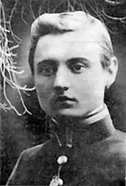

Юрій Клен
(4 жовтня 1891 — 30 жовтня 1947)
ЗАПОВІТИ Ю. КЛЕНА Юрій Клен відійшов від нас. В ньому тратимо письменника, що сама його присутність серед нас воскрешала блискуче і багатонадійне літературне життя 20-их років на Україні, яке за більш-менш стерпних політичних обставин могло б тривати і донині, тривати як ще блискучіша, імпозантна і плодотворча теперішність. Наша пам'ять, пильно і повторно спиняючись на колишньому, спроможна затирати невблаганну відстань, що відокремлює поточну свідомість від минулого, і магічно наближати до нас факти та події, які давно відлунали... Це було в Києві, наприкінці 20-их років. Микола Зеров підводиться з-за свого робочого столу, енергійно відсуваючи крісло. В його руці — аркушик паперу. Голосом, в якому бринять тріюмфуючі нотки, він покликує: "Перший оригінальний український вірш Освальда Федоровича!" Цим віршем був сонет Ю. Клена "Сковорода". Його вмістив М. Зеров в укладеному ним декляматорі "Сяйво" (з'явився друком в другій полов. 1929р. або на початку 1930р.) разом з двома перекладами Ю. Клена з Шеллі, одним перекладом з Рільке і балядою з "Дон Жуана" Байрона, перекладеною поетом на спеціяльне прохання укладача. Не тільки імпульсивний і темпераментний М. Зеров завжди радів успіхам своїх друзів, як і взагалі кожному позитивно розцінюваному ним явищу українського культурного життя, в гурті неоклясиків, пов'язаних вузлами щирого приятельства, панувала атмосфера взаємної доброзичливости і несилуваного сприяння. Ю. Клен не становив винятку. Його вірність і відданість своїм однодумцям та співробітникам на полі культури не пригасли в розлуці, а швидше розрослися і з бігом часу набрали на силі. Поет присвячує друзям теплі октави в поемі "Прокляті роки", змальовує їх на засланні в III частині "Попелу імперій", видає незадовго перед смертю свої прегарні і змістовні "Спогади про неоклясиків". Ще не побачила світу готована Ю Кленом невелика антологія української неоклясики в німецькій мові; ці переклади проф. Державин, знавець німецької поетичної мови, називає конгеніяльними. Автор цих рядків, опинившись у Львові року 1944 і дізнавшись від С. Гординського, що Клен є прибраним на еміграції псевдонімом О. Бурггардта, нав'язує з поетом листовний зв'язок. В першій же листівці Ю. Клен спішить запитати: "Чи нема серед сонетів Миколи Зерова сонета "Поліфем" (ідеться про сонет М. Зерова "Kapnos tes gaies" — М. О.) присвяченого мені перед моїм виїздом? Я не встиг зайти по нього. Там Поліфем кидає каміння в корабель Одіссеїв, який вже на морі, і безсило лютує". В непохитній вірності письменника своїм друзям, яка саме через повноту свою просто не спроможна допустити нічого стороннього і застережливого, відчувається щось від наших козацьких часів, від лицарського середньовіччя — епох, коли ця чеснота була спеціяльно підношувана і овіяна пильним плеканням. Вірність і відданість становлять глибоко симпатичну рису світлої особистости Ю. Клена, рису, гідну пошани та наслідування. В зв'язку з цією вірністю Ю. Клена своїм колегам виникає питання, чи справді відійшла його муза від неоклясичної поетики, чи перестав він бути неоклясиком у поетичній своїй творчості? Заперечення належности Ю. Клена до неоклясичної школи йдуть по лінії тематичній і психологічно-світоглядовій. Але ні тематика, ні психологічні та світоглядові комплекси не визначають поетичного стилю. Не збираємося тут доводити це твердження широким викладом, але вистачить прикладу, що його подає нам літературний доробок самого Ю. Клена. Критики, що хочуть довести причетність поета до романтиків і "переборення" ним неоклясичних первнів, базують свої твердження на спеціяльному наголошуванні його речей, позначених волею, гоном, пристрасним прагненням. З числа цих віршів спинимося на двох сонетах п. з. "Кортес", виниклих у поета не без впливу сонета Х.М. Ередія "Конкістадори" — про це, зрештою, говорить сам Ю. Клен у примітках до "Каравел". Авторові "Трофеїв" властивий не меншою мірою комплекс непохитної і дзвенючої волі, пристрасного пориву, гордого самоствердження, соколиної мужности. Але те, що зветься романтикою характеру (формула, не першорядна під поглядом метафізично-філософським) — не є романтикою в розумінні стилю, і Х.М. Ередія не "імперіялістичний романтик", а був і лишається парнасистом та клясиком. Світогляд і філософія так само не можуть правити за величини, що кваліфікують літературні стилі. Якщо у випадку символізму ідеалістична філософія є тим моментом, що поширюється всеохопно на поетів-символістів, не творячи навіть специфіки "символістичного світогляду", то щодо інших стилів момент світорозуміння письменників, до них належних, цього всепокриваючого характеру не має. І навіть жанри та віршові форми, їх перевага, обминання чи повне ігнорування в тих або інших стилях не можуть правити за вирішальний чинник у визначенні стилю. Учення про стилі мусить базуватися на визначниках, які мають стовідсоткову застосовність до всіх літературних явищ і до кожного зокрема. Інакше учення про стилі ніколи не буде наукою, не буде навіть наукоподібною дисципліною, а завжди виглядатиме як позбавлений виразних методологічних контурів конгльомерат суджень. Тематика, психологічні комплекси, світовідчування і філософія письменників, жанри і віршові форми є елементами, що характеризують напрямок, течію, школу чи індивідуальну творчість. Поетичний же стиль може бути визначений тільки як спосіб і тип поетичного викладу та вислову. Дефініцію стилю творять компоненти: розроблення теми, метода композиційної будови твору, дикція, типологія образовости та епітета, специфіка синтакси, характер лексики. М. Зерову належить формулювання клясичного стилю як "слова твердого й гострого, без ліричного тремтіння, зате чіткого ясною лінією". Аналізуючи формально творчість М. Рильського, метр "п'ятірного грона" констатує, що в Рильського "із мішаної манери "Осінніх зір" виформовується... клясичний стиль, з його врівноваженістю і кляризмом, мальовничими епітетами, міцним логічним побудуванням і строгою течією мислі". Поетичний вислів Ю. Клена повністю вкладається в цю дефініцію. Епізодичні відхилення, що трапляються в ейдології або лексиці Кленової поетики, звичайна річ, на принципову увагу не заслуговують. Вважаємо за конечне зафіксувати для істориків української літератури один факт, що мав місце влітку 1947 року, на початку довготривалої візити Ю. Клена до Баварії, візити, якій судилось урвати його життя. Проф. В. Державин прочитав у рукописі гостеві свою статтю "Поезія і поетика Миколи Зерова". Читання відбулося в обстанові, небезінтересній і для прийдешніх істориків нашого літературного побуту: в імпровізованій кімнаті на горищі одного з бльоків табору ДіПі в Авгсбурзі, скупо освітленій третиною вікна і наполовину роздушеній схилом покрівлі. Юрій Клен уважно і зосереджено слухав, часом на його устах з'являлась лагідна усмішка, а в задумі очей проступало м'яке світло вдоволення. В розмові після читання автор "Попелу імперій" схвалив статтю В. Державина в усіх її твердженнях: і щодо існування неоклясиків як школи, і щодо мистецького стилю школи, і щодо філософічної концепції мистецтва, яку сповідували неоклясики. Зрештою, Ю. Клен ніколи в друку не зрікся своєї приналежности до неоклясиків. За свідоцтво непохитности його естетично-стилістичних позицій може правити його стаття "Бій може початися" ("Звено", ч. З — 4, липень — серпень 1946) в якій він виступає з темпераментною обороною своїх друзів. "Але небезпечнішими, ніж фрази, — констатує Ю. Клен, — є стандартні форми мислення, стандартности яких зовсім не помічається. Отож маємо протиставлення форми змістові замість ствердження їхньої нерозривности. Звідси хоч би недоречне твердження, що формальний вишкіл був самоціллю неоклясиків, яке подибуємо в доповіді (Ю. Клен має на увазі доповідь Ю. Шереха про стилі сучасної української літератури, виголошену на першому з'їзді МУР-у — М. О.). Далі твердження, що неоклясицизм став уже штампом і вичерпав себе. Пригадуються мені слова Рильського з приватної нашої розмови, що пора в слові "неоклясики" скреслити першу частину — "нео". Отже, в цьому розумінні тих кілька поетів старалося дати українській літературі твори клясичні, зразкові. Дивно говорити про те, що всі можливості вичерпані, коли кожний з них (за винятком Рильського) дав лише по одній невеличкій збірці (Филипович, правда, дві, але ж зовсім тонесенькі), тоді як росіяни мають грубі томи Пушкіна й Лермонтова, та й то не вважають, що можливості цим вичерпані. Невже кілька невдалих (а подекуди трохи, може, вдалих) наслідувань початківців-поетів встигли виробити "штампованість"? Я гадаю, що дорібок т. зв. "неоклясиків" не тільки не є ще засвоєний, а що їхні стилістичні можливості треба далі поглиблювати. Вони тільки вказали шлях, а не пішли ним до кінця". Після цих слів Ю. Клена лише безоглядний ригорист наполягав би на потребі почути з уст поета ще виразнішу заяву про те, що погляди та прямування неоклясиків є тотожними з його власними поглядами. "Я гадаю, що дорібок т. зв. "неоклясиків" не тільки не є ще засвоєний, а що їхні стилістичні можливості треба далі поглиблювати. Вони тільки вказали шлях, а не пішли ним до кінця". Ці чіткі слова Ю. Клена звучать як його літературний заповіт, скерований до нас і до наступних письменницьких поколінь. Видатною рисою світогляду Ю. Клена є його ідеалізм. "Храм Грааля, що зноситься в нетлінному царстві духа — це більша реальність, аніж матеріяльний довкільний світ з його мінливим обличчям. Ми маємо в даному разі платонівський реалізм, який протиставляємо реалізмові матеріялістичному",— заявляє письменник у згадуваній вище статті. У вірші "Софія" (1935р.) маємо потужний поетичний документ ідеалістичного збагнення світу. Ідеальне існування нашої святині, на яке зложилися святість і духова значність тисячолітніх помислів у ній і навколо неї, перевершило реальність її існування в камені і металі; поет близький до того, щоб сказати, що в цім ідеальнім існуванні Софії криються в не меншій мірі потенції і її кожночасного просвітленого існування матеріяльного, тоді як навіть руйнація храму, бувши ділом темних і злочинних ментальностей, мусить відійти в повне небуття. Сонет "Сковорода", яким Ю.